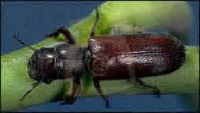
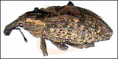
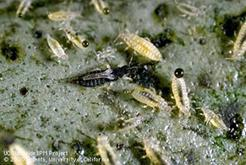
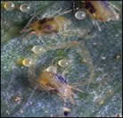

PLAGAS PRINCIPALES DE AGUACATERO

"Taladrador del tronco"
NC:Copturomimus persea Gunthe
ESTA PLAGA PUEDE MATAR AL ARBOL.
ESTA SP. TALADRA EL TRONCO, RAMAS Y CRECIMIENTOS NUEVOS.
EL ATAQUE SE MANIFIESTA POR LA PRESCENCIA DE ASERRIN BLANCO FUERA DEL ORIFICIO QUE PRODUCEN.

"TALADOR DE LA SEMILLA"
NC:Heilipus luari Boh (Coleoptera:Curculionidae)
EL ADULTO PERFORA LA CASCARA DEL FRUTO EN DONDE DEPOSITA SUS HUEVECILLOS.
SI EL ATAQUE SUCEDE CUANDO EL FRUTO ES PEQUEÑO SE CAE.
EL INSECTO ADULTO SE ALIMENTA DE BROTES, HOJAS, Y FRUTOS.

"TRIP DEL AGUACATE"
NC:Heliothrips haemorrhoidalis (Bouche)(Thisanoptera:Thripidae).
SU ATAQUE PROVOCA QUE LA EPIDERMIS DE LOS FRUTOS Y DE LAS HOJAS SE ENGROSE Y SE AGRIETE.
LA LUCHA DE INSECTICIDAS ES FUNDAMENTAL.
SE USAN INSECTICIDAS COMO: diazon, malation, piretroides.

"Acaro de las agallas"
NC:Eriophyes sp.(Acarina:Eriophydae.
SU ATAQUE PROVOCA LA FORMACION DE AGALLAS TIERNAS QUE PARALIZAN SU DESARROLLO.
PARA Oligonychus y Eriophyes SE RECOMIENDA Azocyclopin o Bacillus thuringiensis.
LOS ACARICIDAS SOLO SE APLICARAN SI EL DAÑO ES MUY SEVERO.